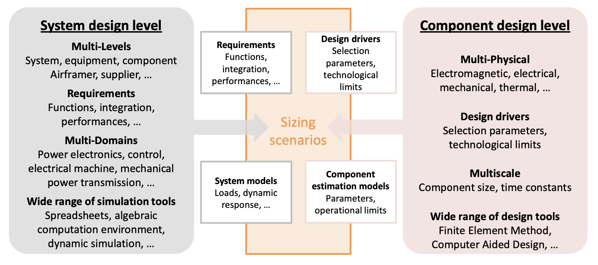
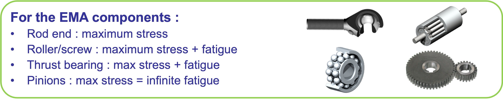
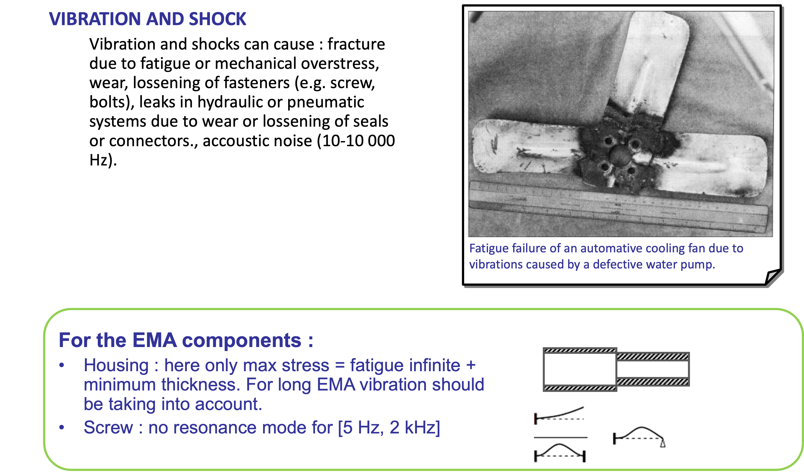
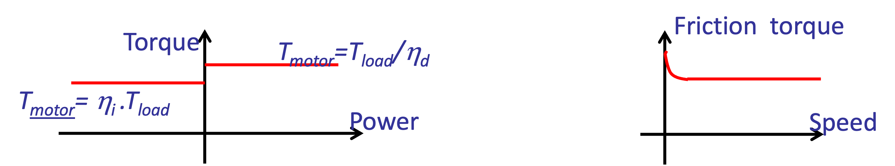
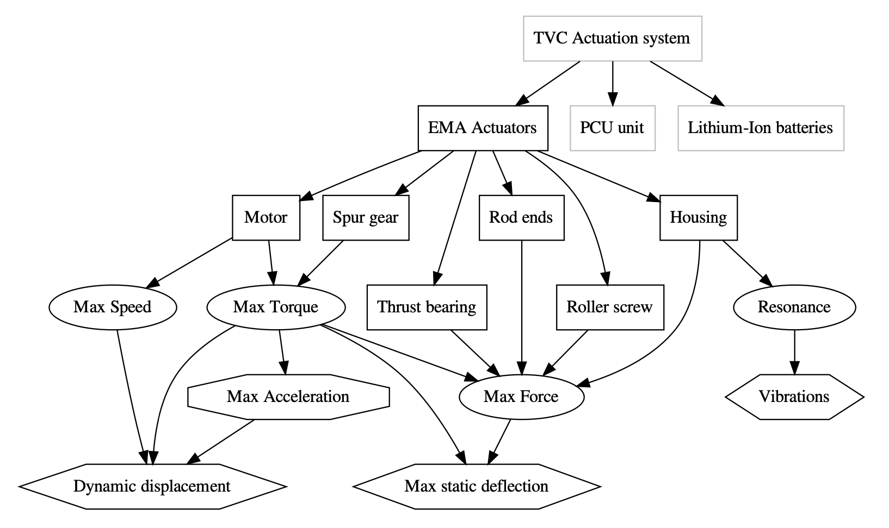

Scenarios and Design Drivers
Contents
Scenarios and Design Drivers#
Sizing and optimization process#

Sizing scenarios and design drivers concept#

Case study#
Aircraft Spoiler#
Functions#
Move : Positions 0, 20, 50° (Hinge torque: 1000-2500 N.m)
No damage (structure and actuator) if spoiler blocking or on gust action

Actuator architecture and components#
Based on Electro-Mechanical Actuator (Moog)#
Components#

Design drivers and sizing scenarios#
Components of the actuator have to satisfy:#
Transient power demand - Performance → Prevents rapid damages (e.g. permanent deformation, rupture)
Continuous power demand - Endurance → Addresses gradual degradation (e.g., fatigue) and ensures reliable operation during service lifetime
Components of the actuator have imperfections:#
Increase stresses on themselves (e.g , inertia) or on other components (e.g, efficiency)
Can create new critical cases (e.g, inertia and jamming) → Induced new design drivers
Sizing scenarios or sizing mission profiles should be determined in order to be representative of all these design drivers
Design drivers of mechanical components (1)#

Design drivers of mechanical components (2)#

Induced design drivers of mechanical components#
Mechanical losses & friction:#
During sizing it is important to take into account the main parasitic aspect of components in terms of power transmission. For mechanical components efficiency and friction are important.
First level of modeling : constant efficiency (direct and inverse) with speed and torque
Second level : friction increases at low speed 

Design drivers of electrical components (1)#

For the EMA study case:
Brushless motor: max torque due to saturation (teeth)
Design drivers of electrical components (2)#

For the EMA study case:
Brushless motor: continuous torque and max temperature due to thermal aspect (need of a thermal model)
Induced design drivers of the electrical components#
Motor rotor inertia:#
Increases electromagnetic torque : critical issue for high dynamic application (e.g., TVC )
High stress when jamming or stop : reflected mass can be very high
Copper and iron losses:#
Effect on sizing of power electronics
Effect on housing for frameless motor

For the EMA study case:
Brushless motor: rotor inertia
Brushless motor: losses
Sizing scenarios and mission profiles#

Verification matrix#

Example of representation#
